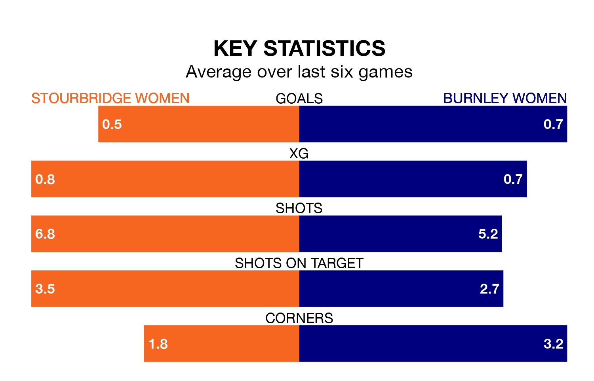

Relegation candidates Stourbridge Women face a challenge against high-flying Burnley Women on Sunday.
Stourbridge Women are ninth in the Women's National League Premier Division – North table, and have picked up four wins and five draws in their 17 games to date.
Burnley, meanwhile, are third in the standings with 29 points, having won eight and drawn five of their first 15 matches, and are 15 points behind table-toppers Newcastle United Women.
With 29 goals in 15 games so far this season, Burnley are scoring more than average in the league with 1.9 goals per game. And they are conceding fewer than average, letting in 14 goals at a rate of 0.9 per game.
Stourbridge, meanwhile, are below average scorers, with 1.4 goals per game, compared to a league average of 1.6. They have conceded 2.8 goals per game.
The home side are in disappointing form in the Women's National League Premier Division North, with one win and two draws from their last six games.
With a win and three draws over that period, the visitors' form is slightly better – they have taken six points from 18, compared to Stourbridge's five.
Stourbridge's last match was on March 14, a 4-0 loss against West Brom WFC.
Burnley drew 0-0 with Stoke City Women last time out, on Sunday.
Updated: 10:31 (UTC), 31/03/24